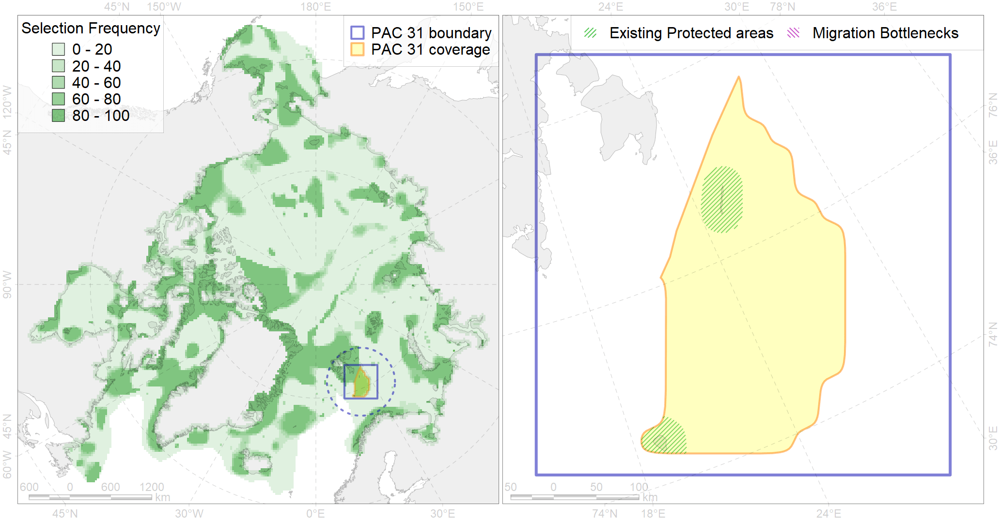

Region 31
Region 31
“ArcNet” scenario 33 achievement for region 31.
Use Accenter for advanced mode.

0
CFs inside of Region completely
2
CFs inside of Region at quarter
5
Complete-targets achievement by Region
10
Half-targets achievement by Region
| CF | Name | Target Achievement for Region | Proportion of Target Achievement in Region | Amount Proportion in Region |
|---|---|---|---|---|
| 7252 | 7252 I 1 1 5 1 | 101.8% | 95.5% | 72.2% |
| 7068 | I.1.1.5.1. Shallow ( < 100 m) shelf banks | 276.5% | 39.1% | 25.9% |
| 4040 | Larvae distribution of the Polar Cod (Boreogadus saida) in the Barents Sea (F35) | 45.0% | 25.9% | 22.0% |
| 7056 | cold seeps and mud vulcanoes | 28.6% | 27.3% | 21.4% |
| 6093 | 6093 Little auk breeding colonies of A. alle alle Svalbard | 45.3% | 21.2% | 17.2% |
| 2015 | Bearded seal whelping areas in Spitsbergen region | 90.4% | 23.0% | 17.2% |
| 5061 | Humpback whale summer feeding areas in Norway | 115.3% | 32.2% | 14.9% |
| 6082 | Thick-billed murre (Uria lomvia lomvia) breeding colonies | 13.2% | 11.2% | 9.5% |
| 6090 | 6090 Fratercularcticnaumanni breeding colonies | 17.4% | 11.0% | 8.9% |
| 2020 | Harp seal foraging areas in the Barents Sea | 33.6% | 33.5% | 8.8% |
| 1005 | Atlantic Walrus Winter Distribution in Spitsbergen and FJL region | 26.4% | 10.2% | 7.7% |
| 6022 | Atlantic puffin (Fratercula arctica naumanni) breeding colonies | 10.6% | 8.0% | 7.6% |
| 6056 | Common eider (Somateria mollissima borealis) Spitsbergen breeding&moulting grounds | 13.2% | 7.6% | 7.3% |
| 5051 | Fin whale summer feeding areas in Norway | 23.9% | 17.5% | 6.9% |
| 3026 | Marginal Ice Zone distribution in April in the Barents Sea LME | 51.9% | 12.3% | 6.6% |
| 4094 | Subarctic fish complex of the Barents region | 92.9% | 17.2% | 6.0% |
| 4054 | Range of the Shorthorn Sculpin (Myoxocephalus scorpius) (F 46), European populations | 154.1% | 11.3% | 4.9% |
| 5099 | White-beaked dolphin feeding area in the Eastern North Atlantic | 36.7% | 13.2% | 4.8% |
| 6047 | Black-legged kittiwake (Rissa tridactyla pollicarius) breeding colonies | 7.3% | 6.3% | 4.7% |
| 6098 | 6098 PagophileburneSvalbard breeding colonies | 10.5% | 6.2% | 4.6% |
| 7066 | I.1.1.3. Shelf plains | 97.5% | 8.0% | 3.9% |
| 4057 | Range of the American Plaice (Hippoglossoides platessoides) (F 47), American populations | 113.9% | 10.3% | 3.7% |
| 9003 | polar bear of the BS (Barents Sea) subpopulation distribution | 13.1% | 6.4% | 3.7% |
| 4027 | Feeding/migration area of the Atlantic salmon (Salmo salar) American populations (F27) | 16.8% | 11.5% | 3.7% |
| 6004 | Little Auk (Alle alle polaris) wintering grounds | 18.4% | 10.3% | 3.6% |
| 4076 | Fish zoogeography, Arctic Region, High-Arctic Shelf Province, N Barents – Kara-Sea District | 43.7% | 11.3% | 3.4% |
| 4001 | Arctic fish complex of the Barents region | 49.1% | 8.9% | 3.3% |
| 6106 | 6106 Urilomvilomvibreeding colonies | 6.2% | 4.6% | 3.2% |
| 4049 | Range of the Haddock (Melanogrammus aeglefinus) (F 42) | 46.2% | 7.4% | 3.0% |
| 6099 | 6099 Rissa tridactyla tridactyla breeding colonies | 3.8% | 3.8% | 2.6% |
| 5067 | Minke whale feeding areas in the Northeast Atlantic | 19.6% | 6.0% | 2.5% |
| 6101 | 6101 Uriaalge aalge breeding colonies | 6.9% | 4.8% | 2.5% |
| 5046 | Bowhead whale of the Spitsbergen population home range | 11.7% | 11.7% | 2.4% |
| 3121 | polynya Svalbard | 18.0% | 2.3% | 2.2% |
| 4087 | Fish zoogeography, Arctic Region, Subarctic Transitional-Atlantic Province, Murman – Spitsbergen aquatory of the Barents District | 10.3% | 6.5% | 2.0% |
| 7067 | I.1.1.4. Shelf troughs | 53.4% | 8.6% | 1.9% |
| 6023 | Atlantic puffin (Fratercula arctica naumanni) wintering grounds | 6.8% | 5.5% | 1.8% |
| 4046 | Range of the Thorny Skate (Amblyraja radiata) (F 3) | 23.1% | 4.3% | 1.8% |
| 4045 | Feeding/migration area of the Pink Salmon (Oncorhynchus gorbuscha), native distribution (F23) | 24.9% | 4.1% | 1.6% |
| 6033 | Little auk (Alle alle alle) breeding colonies in Spitsbergen | 3.0% | 1.6% | 1.6% |
| 4059 | Range of the Greenland Halibut (Reinhardtius hippoglossoides) (F 49) | 49.3% | 4.1% | 1.6% |
| 6049 | Black-legged kittiwake (Rissa tridactyla tridactyla) wintering grounds | 4.4% | 4.4% | 1.6% |
| 4003 | Range of the Atlantic Capelin (Mallotus villosus) (F10) | 44.0% | 3.7% | 1.4% |
| 4017 | Feeding/ migration area of the Greenland Shark (Somniosus microcephalus) (F1) | 5.7% | 3.4% | 1.3% |
| 5112 | Arctic Cetaceans (beluga, bowhead, narwhal) winter habitats as predicterd by MIZ | 2.3% | 1.9% | 1.0% |
| 4038 | Feeding area of the Polar cod in the Barents Sea (F 35) | 3.0% | 2.2% | 0.8% |
| 6009 | Brent goose (Branta bernicla hrota) Greenland, Svalbard and FJL breeding&moulting grounds | 4.1% | 0.8% | 0.7% |
| 4041 | Range of the Polar Cod (Boreogadus saida) (F35) | 3.7% | 1.4% | 0.5% |
| 4039 | Spawning areas of the Polar Cod (Boreogadus saida) in the Barents Sea (F 35) | 0.7% | 0.5% | 0.5% |
| 1008 | Atlantic Walrus haulouts in Spitsbergen and FJL region | 0.4% | 0.4% | 0.4% |
| 6040 | Ivory gull (Pagophila eburnea) postbreeding grounds in the Barents and the Kara Sea | 1.2% | 0.6% | 0.3% |
| 9038 | polar bear denning areas of BS (Barents Sea) subpopulation | 0.4% | 0.2% | 0.2% |
| 6015 | Black guillemot (Cepphus grylle mandti) breeding grounds | 1.5% | 0.3% | 0.2% |
| 4032 | Range of the Arctic skate (Amblyraja hyperborea) (F2) | 4.5% | 0.3% | 0.1% |
| 3037 | Marginal Ice Zone distribution in July in the Barents Sea LME | 0.4% | 0.1% | 0.1% |
| 6028 | Glaucous gull (Larus hyperboreus hyperboreus) breeding grounds | 0.5% | 0.1% | 0.1% |
| 1006 | Atlantic Walrus Summer Distribution in Spitsbergen and FJL region | 0.1% | 0.1% | 0.0% |
| 6083 | Thick-billed murre (Uria lomvia lomvia) wintering grounds | 0.1% | 0.1% | 0.0% |